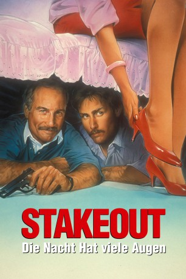

IMDB-Wertung: 6.6 / 10
IMDB-Wertung: 6.6 / 10  Metascore:
Metascore: 
Die beiden Detectivs Bill und Chris bekommen einen unspannenden Job zugewiesen: sie sollen auf die Ex-Freundin eines entflohenen Gangsters aufpassen. Zu allem Übel verliebt sich Chris in die Frau...
Alternativ: Stakeout
 IMDB-Wertung: 6.6 / 10 Metascore:
Die beiden Detectivs Bill und Chris bekommen einen unspannenden Job zugewiesen: sie sollen auf die Ex-Freundin eines entflohenen Gangsters aufpassen. Zu allem Übel verliebt sich Chris in die Frau...
Jahr: 1987
Dauer: 117 Minuten
FSK: 16
Land: USA Studio: Buena Vista Pictures DistributionTonspuren: DD5.1 - ,
Untertitel:
Auflösung: 1080p (1912x1032) Größe: 8171 MB
Regisseur: John Badham
Drehbuch: Alex Proyas
Soundtrack:
Darsteller:
 Richard Dreyfuss als Chris Lecce
Richard Dreyfuss als Chris Lecce Aidan Quinn als Richard 'Stick' Montgomery
Aidan Quinn als Richard 'Stick' Montgomery Dan Lauria als Phil Coldshank
Dan Lauria als Phil Coldshank Forest Whitaker als Jack Pismo
Forest Whitaker als Jack Pismo Ian Tracey als Caylor Reese
Ian Tracey als Caylor Reese Blu Mankuma als 2nd Paramedic
Blu Mankuma als 2nd Paramedic Kim Kondrashoff als Billy Steeks
Kim Kondrashoff als Billy SteeksDatei: X:\2-Dilogie(N-Z)\Stakeout\Nacht hat viele Augen, Die (1987, FSK16, 1912x1032).mkv seit 13.01.2017
Festplatte: HD Collection-2(A-Z)-3(A-M)
 Alle Filme aus Gruppe '2-Dilogie(N-Z)\Stakeout'
Alle Filme aus Gruppe '2-Dilogie(N-Z)\Stakeout'